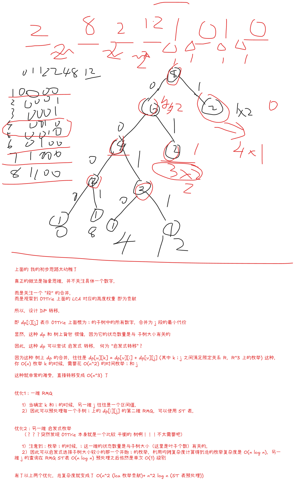

2026“钉耙编程”中国大学生算法设计暑期联赛（2）
一场竟然两道 NTT
1001 xyz 问题【2-SAT / 优化建图】
Problem Description
河灵和胖胖龙正在玩一款逻辑推理类游戏。
游戏桌上摆放着 张数字牌 ，其中 表示第 张数字牌上的数字，每张数字牌上只能填写数字 或 。
桌上还摆放着 张运算牌 ，其中 表示第 张运算牌上的运算符，每张运算牌上只能填写以下三种运算符之一：
&：按位与。|：按位或。^：按位异或。
现在，胖胖龙向河灵发起了挑战。
他给出了 个条件，其中每个条件都包含四个整数 (, , )，表示河灵的填写结果需要满足等式 。
请你帮帮河灵，为每张数字牌填写 或 ，并为每张运算牌填写 &, |, ^ 的其中一种，使得填写方案满足胖胖龙给出的所有条件。或判断不存在满足条件的填写方案。
Input
每个测试点中包含多组测试数据。输入的第一行包含一个正整数 ()，表示数据组数。对于每组测试数据：
第一行三个正整数 ()，分别表示数字牌个数、运算牌个数以及条件个数。
接下来 行，每行四个整数 (, , )，表示河灵的填写结果需要满足等式 。
一张数字牌或运算牌可以不出现在任何条件中；同一张数字牌或运算牌可能同时出现在多个条件中。
保证所有测试数据中 、 与 均不超过 。
Output
对于每组测试数据：若存在满足条件的填写方案，输出的第一行包含一个字符串 YES。
第二行输出一个长度为 的 01 串，其中第 个字符表示第 张数字牌上的数字 。
第三行输出一个长度为 的字符串，其中第 个字符表示第 张运算牌上的运算符 ，字符只能是 &, |, ^ 的其中一种。
若存在多种满足条件的填写方案，输出任意一种即可。
若不存在满足条件的填写方案，输出一行一个字符串 NO。
Sample Input
2
3 2 4
1 1 0 0
2 1 1 1
2 2 0 1
3 2 1 0
1 1 2
1 1 0 0
1 1 0 1Sample Output
YES
011
&^
NOSolution
2-SAT 神秘编码题目，甚至这个 2-SAT 编码比 adhoc 还 adhoc。
题目看起来是一个很标准的逻辑限制：
其中 是 ，这部分天然是布尔变量。真正恶心的是 ，因为它有三种取值：&|^
如果朴素地开三个变量：
a: op 是 &
b: op 是 |
c: op 是 ^那我们很容易写出“最多选一个”：
a -> !b, a -> !c
b -> !a, b -> !c
c -> !a, c -> !b但是“三个里面至少选一个”是：
这是三元子句，不是 2-SAT。
所以这个方向看起来很自然，但是最后会卡在一个非常别扭的地方：
你排除了所有不合法的，却没有保证它一定选了一个合法的。
关键就在于重新编码运算符。
我们用两个布尔变量 表示一个运算符：
P Q op
0 0 &
0 1 |
1 1 ^
1 0 禁用这个编码很神秘，但妙就妙在：三个合法状态不是随便摆的。
它有两个非常好用的性质：
Q = 0 时，只可能是 &
Q = 1 时，可能是 | 或 ^
P = 1 且 Q = 1 时，是 ^
P = 0 且 Q = 0 时，是 &唯一非法状态是：
P=1,Q=0所以全局加：
建边：
add(p[j], q[j]);
add(nq[j], np[j]);这一步相当于把“三选一”硬塞进了两个变量里。
接下来对每个限制分类讨论。
设：
X = x_i
P = p_j
Q = q_j1. y=0,z=0
也就是：
真值表：
X=0: 0&0=0, 0|0=0, 0^0=0 全部可以
X=1: 1&0=0, 1|0=1, 1^0=1 只能 &所以唯一不合法的情况是：
X=1 且 op 不是 &在这个神秘编码里，op 不是 & 等价于：
Q=1因为 & 是 00，另外两个合法运算符都是 Q=1。
所以禁止：
转成：
建边：
add(x[u], nq[v]);
add(q[v], nx[u]);2. y=0,z=1
也就是：
真值表：
X=0: 0&0=0, 0|0=0, 0^0=0 全部不行
X=1: 1&0=0, 1|0=1, 1^0=1 只能 | 或 ^所以只有一种合法情况：
X=1 且 op 不是 &而 op 不是 & 仍然等价于：
Q=1所以直接强制：
建边：
add(nx[u], x[u]);
add(nq[v], q[v]);3. y=1,z=0
也就是：
真值表：
X=0: 0&1=0, 0|1=1, 0^1=1 只能 &
X=1: 1&1=1, 1|1=1, 1^1=0 只能 ^所以：
X=0 时，op 必须是 &
X=1 时，op 必须是 ^根据编码：
& = 00
^ = 11所以这一下变成了非常舒服的：
这里就是这个编码最 adhoc 的地方。
如果 & 和 ^ 没有放在 00 和 11，这一类条件就会变得非常难看。
建边就是两个等价关系：
// P == X
add(x[u], p[v]);
add(p[v], x[u]);
add(nx[u], np[v]);
add(np[v], nx[u]);
// Q == X
add(x[u], q[v]);
add(q[v], x[u]);
add(nx[u], nq[v]);
add(nq[v], nx[u]);4. y=1,z=1
也就是：
真值表：
X=0: 0&1=0, 0|1=1, 0^1=1 不能 &
X=1: 1&1=1, 1|1=1, 1^1=0 不能 ^非法情况是：
X=0 且 op=&
X=1 且 op=^编码后：
op=& 是 P=0,Q=0
op=^ 是 P=1,Q=1看起来会出现三元限制：
X=0 且 P=0 且 Q=0
X=1 且 P=1 且 Q=1但是因为我们已经有全局合法编码，所以可以压成二元子句：
- 禁止
X=0 且 op=&
由于合法状态里，Q=0 只可能是 &，所以禁止：
X=0 且 Q=0也就是：
- 禁止
X=1 且 op=^
由于 ^ 是 P=1,Q=1，并且非法状态 10 已经被禁掉，所以 P=1 时合法状态只能是 ^，所以禁止：
X=1 且 P=1也就是：
建边：
add(nx[u], q[v]);
add(nq[v], x[u]);
add(x[u], np[v]);
add(p[v], nx[u]);于是完整编码表就是：
P Q op
0 0 &
0 1 |
1 1 ^
1 0 禁用完整条件表：
| y | z | 限制 |
|---|---|---|
| 0 | 0 | !X | !Q |
| 0 | 1 | X && Q |
| 1 | 0 | P == X || Q == X |
| 1 | 1 | X | Q && !X | !P |
这题的重点不在 Tarjan，而在这个编码。
Tarjan 只是收尾，编码才是真正的构造。
最后跑 SCC。
如果变量和它的反变量在同一个 SCC 中，无解：
scc[x[i]] == scc[nx[i]]
scc[p[j]] == scc[np[j]]
scc[q[j]] == scc[nq[j]]否则有解。
取值时注意 SCC 编号方向。对于当前这种 Tarjan 写法，应该用：
value = scc[var] < scc[not_var]P=1,Q=0 已经被全局限制禁掉，所以不会出现。
复杂度：
Solution(STD)
我愿称之为 2-SAT 分类降维
竟然可以根据是否出现过 分别分为两类然后
- 出现过：排除
|操作 - 未出现：用
|代替^
至此，2-SAT 每一个候选集合都 了，可以直接建图。
Code
#include<bits/stdc++.h>
using namespace std;
const int N = 3e5 + 5;
int n, m, k;
// p q
// 0 0 and
// 0 1 or
// 1 1 xor
// 1 0 禁用 即 !p | q : p->q and !q->!p
int x[N], nx[N], p[N], q[N], np[N], nq[N];
int tot;
vector<int> e[N*6];
int dfn[N*6], scc[N*6], sc, stk[N*6], tp, low[N*6];
int dfncnt, ins[N*6];
void tarjan(int u) {
dfn[u] = low[u] = ++dfncnt;
stk[++tp] = u; ins[u] = 1;
for(auto v:e[u]) {
if(!dfn[v]) {
tarjan(v);
low[u] = min(low[u], low[v]);
} else if(ins[v]) {
low[u] = min(low[u], dfn[v]);
}
}
if (low[u] == dfn[u]) {
++sc;
do {
int u = stk[tp];
scc[u] = sc;
ins[u] = 0;
}while(stk[tp--]!=u);
}
}
void add(int u,int v) {
e[u].push_back(v);
}
void solve() {
cin >> n >> m >> k;
sc = dfncnt = tp = tot = 0;
for (int i = 1; i <= n; i++) {
x[i] = ++tot;
nx[i] = ++tot;
}
for (int i = 1; i <= m; i++) {
add(p[i]=++tot, q[i]=++tot);
add(nq[i]=++tot, np[i]=++tot);
}
for (int i = 1; i <= k; i++) {
int u, v, y, z;
cin >> u >> v >> y >> z;
// x[u] op[v] y = z
if (y==0&&z==0) {
// 如果是 0 都可以
// 如果是 1 一定是 and(0, 0) 根据 表格，合法的状态中，可以用 q=0 直接代表
// 综上，只有一种非法情况，就是 x == 1 && q == 1 其取反是我们需要的，即
// !x | !q : x->!q and q->!x
add(x[u], nq[v]);
add(q[v], nx[u]);
} else if(y==0&&z==1) {
// 如果是 0 不可能
// 如果是 1 一定不是 and 不是 q=0 而是 or 或者 xor q=1
// 综上，只有一种合法情况 x == 1 && q == 1 加两条语句
add(nx[u], x[u]);
add(nq[v], q[v]);
} else if(y==1&&z==0) {
// 这里编码太 tm 妙了
// 如果是 0 一定是 and(0, 0)
// 如果是 1 一定是 xor(1, 1)
// 综上，只有一种合法情况 x == p && x == q
// 注意这里 其实是枚举各种 x -> p and !x -> !p and p -> x and !p -> !x
add(x[u], p[v]);
add(nx[u], np[v]);
add(p[v], x[u]);
add(np[v], nx[u]);
add(x[u], q[v]);
add(nx[u], nq[v]);
add(q[v], x[u]);
add(nq[v], nx[u]);
} else if(y==1&&z==1){
// 如果是 0 不可能 and(0, 0)
// 如果是 1 不可能 xor(1, 1)
// 综上，唯一的非法情况 (x == 0 && p == 0 && q == 0) or (x == 1 && p == 1 && q == 1)
// 需要的是： (x == 1 || p == 1 || q == 1) && (x == 0 || p == 0 || q == 0)
// (x == 1 | q == 1) and (x == 0 | p == 0)
add(nx[u], q[v]);
add(nq[v], x[u]);
add(x[u], np[v]);
add(p[v], nx[u]);
}
}
fill(dfn,dfn+1+tot,0);
for (int i = 1; i <= tot; i++) {
if(!dfn[i]) {
tarjan(i);
}
}
bool ok = true;
for (int i = 1; i<=n;i++) {
ok &= scc[x[i]] != scc[nx[i]];
}
for (int i = 1; i <=m;i++) {
ok &= scc[p[i]] != scc[np[i]];
ok &= scc[q[i]] != scc[nq[i]];
}
if(!ok) {
cout << "NO\n";
} else {
cout << "YES\n";
for(int i = 1;i<=n;i++) {
// 快速理解为什么是 < 号：
// 永真式 A | A: !A -> A
// 对应的 scc 序，显然 A 的 scc 编号较小，小了，就真了
cout << (scc[x[i]] < scc[nx[i]]);
}cout << "\n";
for (int i = 1;i <=m;i++) {
int pp = scc[p[i]] < scc[np[i]];
int qq = scc[q[i]] < scc[nq[i]];
if (!pp&&!qq) {
cout << "&";
} else if(!pp&&qq) {
cout << "|";
} else if(pp&&qq) {
cout << "^";
}
}
cout << "\n";
}
for (int i = 1; i<= tot;i++) e[i].clear();
}
int main() {
ios::sync_with_stdio(0); cin.tie(0); cout.tie(0);
int T = 1;
cin >> T;
while (T--) solve();
}1002 表达式2【二元生成函数加速 DP】
Problem Description
河灵上小学二年级了。最近，河灵在学校里学到了最新最酷的乘法运算。
这一天，老师给河灵一个由 个非零数字构成的数字串 。河灵可以在数字串的任意两个相邻数字之间的空隙中插入乘号，使其变成一个数字表达式。
例如数字串 ，河灵可以在第一个空隙和第三个空隙中插入乘号，就可以得到表达式 。
简单的表达式求值已经难不倒河灵了，该去研究更有意思的数学问题了！于是河灵交给了你这个问题。
对于每一个整数 （），你需要求出：在数字串 的 个空隙中插入恰好 个乘号，使其变成一个数学表达式，计算所有不同插入方案所得表达式的结果之和。
答案对 取模。
Input
每个测试点中包含多组测试数据。输入的第一行包含一个正整数 （），表示数据组数。对于每组测试数据：
第一行一个正整数 （），表示数字串长度。
第二行一个长度为 的数字串 ，保证 的每一位数字均为 中的某一个。
保证所有测试数据中 之和不超过 。
Output
对于每组测试数据：输出一行 个整数 ，其中 表示当 时问题的答案对 取模后的值。
Sample Input
2
3
777
5
32768Sample Output
777 1078 343
32768 81324 67124 21144 2016Solution
DP 分析 -> 二维状态+双函数 DP -> 生成函数表示 DP -> NTT 加速递推
-
事后诸葛亮：看到打印 的答案的时候，就往 FFT 加速 二维生成函数 递推方向想
-
DP分析
- 朴素地定义二维状态 DP
- 表示前 个字符，插入 个乘号的结果之和
- 依然是增量法 DP 转移
- 显然考虑的是：
- 当枚举到第 个字符的时候， 考虑要不要在前面新插入一个 乘号
- 不插入：相当于前面的结果都乘以 10 在加上这一位的影响（上一个乘号之前的结果之和是什么？）
- 因此引入新的辅助函数 表示这个结果之和
- 既然需要用到 自然也要维护它的转移
- 即：不变
- 插入：相当于这一位的数字乘以之前 的结果
- 同样要维护
- 显然是：
- 不插入：相当于前面的结果都乘以 10 在加上这一位的影响（上一个乘号之前的结果之和是什么？）
- 朴素地定义二维状态 DP
综上，转移为
建立生成函数（二维！）
初步改写：
写成矩阵形式，就是：
记
则
显然，这是我第一次遇到矩阵套多项式（原来套的是二维生成函数）的
- 如何优化多项式连乘的复杂度？
- 使用类似线段树的方法
- 其实是分治乘法
- 这样可以最大化利用 FFT 这类算法的乘法优势
- 复杂度
Code
几个坑点，见代码
#include<bits/stdc++.h>
using namespace std;
using LL = long long;
using Poly = vector<LL>;
const int N = 1e5 + 5;
const LL mod = 998244353;
const int g = 3;
inline void inc(LL& a, LL x) {a+=x;if(a>=mod)a-=mod;}
inline void dec(LL& a, LL x) {a-=x;if(a<0)a+=mod;}
inline void tim(LL& a, LL x) {(a*=x)%=mod;}
inline LL add(LL a, LL b){a+=b;if(a>=mod)a-=mod;return a;}
inline LL sub(LL a, LL b){a-=b;if(a<0)a+=mod;return a;}
LL ksm(LL a, LL b = mod - 2) {
LL res = 1;
for (;b;b>>=1,tim(a,a)) if(b&1) tim(res, a);
return res;
}
namespace NTT{
const int N = 1 << 21;
LL w[N], iw[N];
void init() {
for (int i = 1;i < N; i<<=1) {
LL wn = ksm(g, (mod-1)/(i<<1));
LL iwn = ksm(wn);
// 【宇宙超级无敌大坑点：没初始化 w[i] = iw[i] = 0】
w[i] = iw[i] = 1;
for (int j = 1; j < i;j++) {
w[i|j] = w[i|(j-1)] * wn % mod;
iw[i|j] = iw[i|(j-1)] * iwn % mod;
}
}
}
void DIF(Poly& A, int n) {
for (int l = n >> 1;l;l>>=1) {
for (int i = 0; i < n; i += l<<1) {
for (int j = 0;j<l;j++) {
LL x = A[i|j], y = A[i|l|j];
A[i|j] = add(x,y);
A[i|l|j] = sub(x,y) * w[l|j] % mod;
}
}
}
}
void DIT(Poly& A, int n) {
for (int l = 1; l < n;l <<= 1) {
for (int i = 0; i < n; i += l<<1) {
for (int j = 0;j<l;j++) {
LL x = A[i|j], y = A[i|l|j] * iw[l|j] % mod;
A[i|j] = add(x,y);
A[i|l|j] = sub(x,y);
}
}
}
LL invn = ksm(n);
for (int i = 0; i < n; i++) tim(A[i], invn);
}
void mul_to(Poly& A, Poly& B, int lim) {
int n = A.size(), m = B.size(), L = 1;
while(L<n+m-1) L <<= 1;
A.resize(L), B.resize(L);
DIF(A,L),DIF(B,L);
for (int i =0 ; i<L;i++) tim(A[i], B[i]);
DIT(A,L);
A.resize(lim);
}
Poly mul(Poly A, Poly B, int lim=-1) {
if(lim==-1)lim = A.size() + B.size() - 1;
mul_to(A, B, lim);
return A;
}
void add_to(Poly& A,const Poly& B) {
A.resize(max(A.size(), B.size()));
for(int i = 0;i<B.size();i++) inc(A[i], B[i]);
}
Poly addP(Poly A, Poly B) {
add_to(A, B);
return A;
}
}
using NTT::mul;
using NTT::addP;
struct Mat{
Poly a00,a01,a10,a11;
Mat(){}
Mat(Poly&& a00, Poly&& a01, Poly&& a10, Poly&& a11)
:a00(move(a00)),
a01(move(a01)),
a10(move(a10)),
a11(move(a11))
{}
};
int n;
string s;
Mat merge(const Mat& a, const Mat& b) {
return Mat(
addP(mul(a.a00,b.a00),mul(a.a01,b.a10)), addP(mul(a.a00,b.a01), mul(a.a01,b.a11)),
addP(mul(a.a10,b.a00),mul(a.a11,b.a10)), addP(mul(a.a10,b.a01), mul(a.a11,b.a11))
);
}
Mat dc(int l,int r) {
if(l==r) {
return Mat(
{10,s[l]}, {0,1},
{s[l]}, {1}
);
} else {
int mid = (l + r) / 2;
Mat L = dc(l,mid);
Mat R = dc(mid+1,r);
return merge(L, R);
}
}
void solve() {
cin >> n >> s;
s = " " + s;
// 【双重的坑】
// 【坑点1：特判 n = 1，要不然无限递归】
if(n == 1) {
// 【坑点2：不要 s[i] -= '0' 之后作为答案输出，否则输出 滚木 字符】
cout << s[1] << "\n";
} else {
for (int i = 1; i <= n;i++) s[i] -= '0';
Poly F1 = {s[1]}, G1 = {1};
Mat M = dc(2, n);
Poly Fn = addP(mul(M.a00,F1), mul(M.a10,G1));
// Poly Gn = addP(mul(M.a01,F1), mul(M.a11,G1));
for(int i = 0; i < n;i ++) {
// assert(Fn[i] >= 0 && Fn[i] < mod);
cout << Fn[i] << " ";
}cout << "\n";
}
}
int main() {
// auto st = clock();
NTT::init();
ios::sync_with_stdio(0); cin.tie(0); cout.tie(0);
int T = 1;
cin >> T;
while (T--) solve();
// auto ed = clock();
// cout << (ed - st) << "ms\n";
}1003 张力【01Trie / LCA / 启发式 DP】
Problem Description
胖胖龙正在研究一种数字排列艺术。
他认为，对于任意两个非负整数 ，将它们相邻放置时会产生大小为 的“张力”。
现在，胖胖龙有一个长度为 的非负整数序列 。他希望将这些数重新排列成 ，使得相邻数字之间的总张力最小，即最小化：
其中 表示按位异或。
对于正整数 ， 表示 二进制表示下最低位的 对应的数值，例如 。特别地，我们定义 。
请你帮帮胖胖龙，求出最小可能的总张力。
Input
每个测试点中包含多组测试数据。输入的第一行包含一个正整数 ，表示数据组数。对于每组测试数据：
第一行一个正整数 ，表示序列的长度。
第二行 个整数 ，表示序列 。
保证所有测试数据中 之和不超过 。
Output
对于每组测试数据：输出一行一个整数，表示最小可能的总张力。
Sample Input
3
3
0 1 2
5
3 4 5 6 7
8
1 8 2 0 12 1 4 2Sample Output
2
4
8Solution
- 01Trie 上 LCA = lowbit
- 二叉树上启发式 DP 合并
- 启发式 + ST 表 RMQ -> 优化 树上合并 DP

Code
#include<bits/stdc++.h>
using namespace std;
using LL = long long;
const int N = 5e3 + 5;
const int B = 50;
const LL INF = 0x3f3f3f3f3f3f3f3f;
int n;
LL a[N];
namespace Trie{
// 【坑点1：Trie 的数组不要开小了！】
int ch[N*50][2], tot;
int pass[N*50], dep[N*50];
void clear() {
memset(ch,0,sizeof(ch[0]) * (tot + 2));
memset(pass,0,sizeof(pass[0]) * (tot + 2));
memset(dep,0,sizeof(dep[0]) * (tot + 2));
tot = 1;
}
void insert(LL x) {
int cur = 1;
pass[cur]++;
for(int i = 0;i<B;i++) {
int to = x >>i & 1;
if (!ch[cur][to]) ch[cur][to] = ++tot, dep[tot] = dep[cur]+1;
cur = ch[cur][to];
pass[cur]++;
}
}
vector<LL> dfs(int u) {
int l = ch[u][0], r = ch[u][1];
int c = pass[u];
vector<LL> res;
if (!l && !r) {
res.assign(c+1, 0);
res[0] = INF;
return res;
}
if (!l) return dfs(r);
if (!r) return dfs(l);
LL w = 1LL << dep[u];
auto L = dfs(l);
auto R = dfs(r);
if(L.size() > R.size()) swap(L, R);
int szR = R.size();
int lg = __lg(szR);
vector<vector<LL>> rmq(szR,vector<LL>(lg+1));
for (int i = 0; i < szR;i++) rmq[i][0] = R[i] + w * i;
for (int p = 1; p <= lg;p++) {
for (int i = 0;i < szR;i++) {
int j = min(szR-1, i + (1 << (p-1)));
rmq[i][p] = min(rmq[i][p-1], rmq[j][p-1]);
}
}
// dp_u[k] = max dp_a[i] + dp_b[j] + w * (i + j - k)
// 其中 max(abs(i-j), 1) <= k <= i + j
// 先枚举 k >= 1, i >= 1 然后
// j >= k - i, i - k <= j <= i + k
// 即 abs(i - k) <= j <= i + k
res.assign(c+1, INF);
int szL = L.size();
for (int k = 1; k <= c; k++) {
for (int i = 1; i < szL; i++) {
int jl = abs(i - k), jr = min(i+k, szR - 1);
if (jl > jr) continue;
int lgl = __lg(jr - jl + 1);
LL tmp = min(rmq[jl][lgl], rmq[jr-(1<<lgl)+1][lgl]);
// 【坑点2：别爆 long long 了】
__int128 x = (__int128) w * (i - k) + tmp + L[i];
if(x < res[k]) res[k] = x;
}
}
return res;
}
LL cal() {
return dfs(1)[1];
}
}
void solve() {
cin >> n;
Trie::clear();
for (int i = 1; i <= n; i++) {
cin >> a[i];
Trie::insert(a[i]);
}
cout << Trie::cal() << "\n";
}
int main() {
ios::sync_with_stdio(0); cin.tie(0); cout.tie(0);
int T = 1;
cin >> T;
while (T--) solve();
}1005 减数游戏 2【博弈 / 容斥原理 / NTT】
Problem Description
河灵和胖胖龙正在玩「减数游戏」。
游戏在一个长度为 的正整数序列 （）上进行，这些数构成了一个可重集合 。
游戏开始时，河灵和胖胖龙的分数均为 。河灵和胖胖龙轮流操作，河灵先手。
每次操作需要在 范围内选择一个正整数 ，然后将当前集合 中的所有数都减去 ，如果某些数在当前操作后变成了 ，那么这些数将会被立即移出集合 。若本次操作中至少有一个数被移出集合 ，则对方玩家得一分。
当集合 为空时，游戏结束。记最终河灵与胖胖龙的分数分别为 。若 ，则河灵获胜；否则胖胖龙获胜。
现在，河灵获得了一个残缺的序列 （），其中某些位置的值已知，满足 ；其余位置的值未知，用 表示。
对于每个满足 的未知位置，河灵都可以将 替换成 中的任意一个正整数。不同未知位置的替换相互独立。
请你帮帮河灵，求出有多少种不同的替换方案，使得在河灵和胖胖龙都采取最优策略的前提下，最终河灵获胜。两种替换方案不同，当且仅当存在某个未知位置，在两种方案中的替换数值不同。答案对 取模。
Input
每个测试点中包含多组测试数据。输入的第一行包含一个正整数 （），表示数据组数。对于每组测试数据：
第一行一个正整数 （），表示序列 长度。
第二行 个整数 （），表示残缺的序列 。其中某些位置的值已知，保证满足 ；其余位置的值未知，用 表示。
保证所有测试数据中 之和不超过 。
Output
对于每组测试数据：输出一行一个整数，表示答案对 取模后的值。
Sample Input
5
7
7 4 1 3 5 4 1
11
8 9 3 1 11 1 6 6 4 2 7
6
0 1 4 5 0 0
6
0 0 0 0 0 0
15
0 4 0 13 0 0 6 0 13 0 0 2 8 3 0Sample Output
0
1
67
27867
528208295Solution
- 容斥原理
- 回顾一下
- yesAND_i / noAND_i 表示的是：钦定 至少 i 个一定/一定不
- 第一种：yesOR = sum of ±yesAND_i
- 第二种：yesAND = U - noOR = U - (sum of ±noAND_i)
- 后来我发现我好傻逼， 其实就是 noAND_0
- 所以 yesAND = sum of ± noAND_i
- 这个题，它的外部是一层博弈问题
- 通过分析它的先手优势与操作控制
- 奇偶性
- 等
- 得到：填数后的数字集合 合法当且仅当
- 即最小的没有出现过的正整数，是奇数
- 问题就是求这个填法的方案数
- 开始容斥
- 假设有 个填数字的位置
- 一开始，已经有了一些数字占位，所以枚举 答案为
- 因此，前面的没选过的数字必须被选中（假设有 个空缺）， 一定不选
- 合法的方案描述为：
- 个完全不同的小球，放到 个不同的箱子中，其中所有的 个盒子，都必须有小球放，求合法的方案数
- 分析：
- 这是一个 异球，异盒，特定盒子特定数量 的小球盒子问题
- 如果是 同球 的话，隔板法就可以解决了
- 难就难在 是 异球 所以不得不使用容斥
- 如何容斥？
- 最终我们需要的是，所有的 个空都要有球，是 AND ，
- 相比：钦定若干位置先放 1 个（这是一个死路）
- 所以，使用 容斥原理2
- 所以，我们需要快速求出：至少有 个位置不放球的方案数，显然这个好枚举了
- 钦定若干位置不放的话，以后也不再放了
- 即
- 然后就是简单的全集
- 显然是随便放
- 即
- 因此
-
- 后来才发现
- 最终我们需要的是，所有的 个空都要有球，是 AND ，
考虑这个求解这个：
分离出 与 可观察到：
设
则
整合式子
因此针对不同的 我们可以计算其卷积，使用 NTT 计算（因为 998244353 友好）
- 忘了说了， 的时候， 注意特判
Code
#include<bits/stdc++.h>
using namespace std;
using LL = long long;
using Poly = vector<LL>;
const int N = 1e5 + 5;
const LL mod = 998244353;
const int g = 3;
// +-*
inline LL add(LL a, LL b) {a += b;if(a>=mod)a-=mod;return a;}
inline LL sub(LL a, LL b) {a -= b;if(a<0)a+=mod;return a;}
inline void inc(LL& a, LL x) {a += x;if(a>=mod)a-=mod;}
inline void dec(LL& a, LL x) {a -= x;if(a<0)a+=mod;}
inline void tim(LL& a, LL x) {(a*=x)%=mod;}
// 求逆
LL ksm(LL a, LL b = mod - 2) {
LL res = 1;
for(;b;b>>=1,tim(a,a))if(b&1)tim(res,a);
return res;
}
namespace NTT{
const int N = 1 << 21;
// w_{N}^{i} / w_{N}^{-i}
LL w[N], iw[N];
void init() {
for (int i = 1; i < N; i <<= 1) {
LL wn = ksm(g, (mod-1)/(i<<1));
LL iwn = ksm(wn);
w[i] = iw[i] = 1;
for (int j = 1;j<i;j++) {
w[i|j] = w[i|(j-1)] * wn % mod;
iw[i|j] = iw[i|(j-1)] * iwn % mod;
}
}
}
void DIF(Poly& A, int n) {
for (int l = n >> 1; l; l>>=1) {
for (int i = 0; i < n; i += l << 1) {
for (int j = 0; j < l; j++) {
LL x = A[i | j], y = A[i | l | j];
A[i | j] = add(x, y);
A[i | l | j] = sub(x, y) * w[l | j] % mod;
}
}
}
}
void DIT(Poly& A, int n) {
for (int l = 1; l < n; l<<=1) {
for (int i = 0; i < n; i += l << 1) {
for (int j = 0; j < l; j++) {
LL x = A[i | j], y = A[i | l | j] * iw[l | j] % mod;
A[i | j] = add(x, y);
A[i | l | j] = sub(x, y);
}
}
}
LL invn = ksm(n);
for (int i = 0; i < n; i++) tim(A[i], invn);
}
void mul_to(Poly& A, Poly& B, int lim) {
int n = A.size(), m = B.size(), L = 1;
while(L < n + m - 1) L <<= 1;
A.resize(L); B.resize(L);
DIF(A, L); DIF(B, L);
for (int i = 0; i < L; i++) tim(A[i], B[i]);
DIT(A, L);
A.resize(lim);
}
}
LL fac[N], invfac[N];
void init() {
fac[0] = 1;
for (int i = 1; i < N; i++) fac[i] = fac[i-1] * i % mod;
invfac[N-1] = ksm(fac[N-1]);
for (int i = N-1; i >= 1; i--) invfac[i-1] = invfac[i] * i % mod;
}
LL binom(int a, int b) {
if (a < b) return 0;
return fac[a] * invfac[b] % mod * invfac[a-b] % mod;
}
int n;
bool vis[N];
Poly A, B; // B 其实就是 invfac
void solve() {
int k = 0;
cin >> n;
fill(vis,vis+1+n+1,false);
for (int i = 1; i <= n; i++) {
int a;
cin >> a;
if (a == 0) {
k++;
} else {
vis[a] = true;
}
}
A.resize(n);
B.resize(n);
for (int j = 0; j < n; j++) {
A[j] = ksm(n - 1 - j, k) * invfac[j] % mod;
if (j & 1) A[j] = (-A[j] + mod) % mod;
}
for (int j = 0;j < n; j++) B[j] = invfac[j];
NTT::mul_to(A, B, n);
LL ans = 0;
int i = 0;
for (int _ = 1; _ <= n+1; _++) {
// 【坑点1：跳过不可能的奇数】
if(_&1 && !vis[_]) {
if(_ == n+1) {
// noOR 并集求的是 \sum_{j=0}^{i} (-1)^j \binom{i}{j} (n-j)^k
// 也就是说 n = n + 1
// 不用 NTT 直接暴力求和
LL res = 0;
for (int j = 0; j <= i; j++) {
LL tmp = binom(i, j) * ksm(n-j, k) % mod;
if (j & 1) dec(res, tmp);
else inc(res, tmp);
}
inc(ans, res);
} else {
inc(ans, fac[i] * A[i] % mod);
}
}
if(!vis[_]) i++;
}
cout << ans << "\n";
}
int main() {
init();
NTT::init();
ios::sync_with_stdio(0); cin.tie(0); cout.tie(0);
int T = 1;
cin >> T;
while (T--) solve();
}1006 合成大hdu【构造】
Problem Description
河灵是 hdu 的狂热粉丝。在他眼中，一切的一切都是 hdu 的模样。
有一天晚上，河灵在草稿纸上涂鸦时发现，他居然可以在一个字符串中窥见 hdu 的影子！对于一个字符串 ，河灵可以一下子就数出字符串 的不同子序列 hdu 的个数。
简单的数数已经不能满足河灵了。河灵有一个正整数 ()，河灵很想知道拥有不同子序列 hdu 个数恰好为 的字符串 是什么样的。
请你帮帮河灵，你需要构造一个仅包含 h, d, u 三种字符的字符串 ，使得字符串 的不同子序列 hdu 的个数恰好等于 。但是河灵的草稿纸大小有限，所以你构造的字符串长度不能超过 。
可以证明，对于所有满足 的正整数 ，至少存在一种满足要求的构造方案。
注：
- 子序列：如果 可以通过 删除若干个（可能是零个或全部）元素，且不改变剩余元素的相对顺序得到，则称 是 的子序列。
- 不同的子序列：两个子序列 不同，当且仅当原序列中至少存在一个位置在一个子序列中出现，在另一个子序列中被删除。
Input
每个测试点中包含多组测试数据。输入的第一行包含一个正整数 ()，表示数据组数。对于每组测试数据：
一行一个正整数 ()，表示构造的字符串 需要包含的不同子序列 hdu 的个数。
Output
对于每组测试数据：输出一行一个字符串 ()，表示你构造的字符串。你需要保证字符串 仅包含 h, d, u 三种字符。
若存在多种满足条件的字符串 ，输出任意一种即可。
Sample Input
3
1
3
27Sample Output
hdu
hdhdu
hhhddduuuSolution
adhoc 神秘构造题目，基于 基数表示法 + 数轴关系分配的充分利用
如果数值范围很小，我们考虑的是，把它表示为 的形式
- 理解方式：从 向两边扩展 ，发现，他们的和即为
- 关键在于： 权值的卡墙
- 约束条件：所有的字母数量 即需要限制：
- 最大表示的数字大约为：
如果过大，这种构造最多只能构造出来 平方级别的数字，对于立方级别，显然需要尽量均分，大约 ，于是有：
- 公式：
- 理解方式：以 个 d 为中心，分别向两侧对称式的扩展
- 关在在于： 平均变量
- 约束条件：
- 隐约构造丢番图方程：
- 所以：
- 最大表示的数字约为：
- 因此足够了，但是需要注意这里的精度是否每一个都被考虑到，并且预测它的下限
- 如果 那么
- 所以可行的解只有：
- 则
- 需要求解这个方程，其中约束条件是 ，且 ，而必然有
- 故该方程有解：
- 下限估计？：
- 隐含的条件是：
- 根据丢番图方程： 这个方程的解， 的周期为
- 所以，只要 ， 的解就一定合法
- 所以该方法对于 成立
Code
#include<bits/stdc++.h>
using namespace std;
bool check(string s, int ans) {
int a = 0, b = 0, c = 0;
for(auto _: s) {
if (_ == 'h') a++;
else if (_ == 'd') b += a;
else c += b;
}
// cout << a << " " << b << " " << c << "\n";
return c == ans && s.size() <= 3001;
}
string cal1(int n) {
// n <= 1e6
int B = 1500;
int q = n / B, r = n % B;
return string(r, 'h') + "d" + string(B - r, 'h') + string(q, 'd') + "u";
}
string cal2(int n) {
// n > 1e6
int B = 1000, C = 999;
int r = B - n % B, m = (n - C * r) / B, q = m / C, s = m % C;
// ??? 神秘特判，要不然 999999999 的时候 q = 1001, s = 0
if (!s && q) q--, s+=C;
return string(r, 'h') + "d" + string(B - r, 'h') + string(q, 'd') + string(C - s, 'u') + "d" + string(s, 'u');
}
void solve() {
int n;
cin >> n;
string res = (n <= 1e6 + 5? cal1(n) : cal2(n));
// if (!check(res, n)) {
// cout << n << ":";
// cout << res.size() << "\n";
// }
cout << res << "\n";
}
int main() {
ios::sync_with_stdio(0); cin.tie(0); cout.tie(0);
int T = 1;
cin >> T;
while (T--) solve();
}1007 另一个 shu 论问题【莫比乌斯反演 / 启发式合并】
Problem Description
随着对算法竞赛研究的不断深入，河灵逐渐对“数论”与“树论”产生了浓厚的兴趣。
现在，河灵有一棵包含 个节点的树，节点编号为 ，根节点为 。
我们记 表示整数 的最大公约数，记 表示节点 在这棵树中的最近公共祖先的编号。河灵想知道，“数论”和“树论”碰撞在一起，会产生什么样的火花？
所以河灵想请你求出，有多少对 () 满足 。
Input
每个测试点中包含多组测试数据。输入的第一行包含一个正整数 ()，表示数据组数。对于每组测试数据：
第一行一个正整数 ()，表示树的大小。
接下来 行，每行两个正整数 ()，表示树中存在无向边 。
保证所有测试数据中 之和不超过 。
Output
对于每组测试数据：输出一行一个整数，表示答案。
Sample Input
2
5
1 2
2 3
1 4
4 5
10
3 9
4 7
6 9
8 5
5 2
9 1
1 2
2 7
7 10Sample Output
7
27Solution
群友的题解是什么垃圾？莫反你先别急着用除法换元
DSU on Tree 本质上就是 继承为主，从而少读，少写
考虑子树信息合并，lca 节点 新来了一个子树上面的 时，需要匹配已有子树中的 组成 lca 关系
- 其中
- 即集合 中 的倍数个数
- 通过平均 时间进行维护，具体原因见后文。
特别注意
- 即 的因子个数的和，是 级别的，而非 ！
- 因此我们可以暴力枚举 范围内的所有数字的质因子
- 既然如此，这就需要 调和级数时间内在
init内预处理所有数字的引子集合
- 计算的时候，每一个 lca 节点，一定要最后插入（贡献为子树中其倍数的个数），否则会被重复计数
Code
#include<bits/stdc++.h>
using namespace std;
using LL = long long;
const int N = 2e5 + 5;
vector<int> F[N];// 因子集合
int primes[N], cntP, mu[N], factor[N];
int n;
vector<int> e[N];// 树
int son[N], sz[N];
int dfncnt, rnk[N];
map<int,int> cnt[N];
LL ans;
void init() {
mu[1] = 1;
for (int i = 2; i < N; i++) {
if (!factor[i]) {
factor[i] = primes[++cntP] = i;
mu[i] = -1;
}
for (int j = 1; j<=cntP;j++) {
int p = primes[j];
int pi = p * i;
if (pi >= N) break;
factor[pi] = p;
if(i%p) {
mu[pi] = -mu[i];
} else {
mu[pi] = 0;
break;
}
}
}
for(int i = 1; i <N; i++) {
for(int j = i;j<N;j+=i) {
F[j].push_back(i);
}
}
}
void dfs0(int u,int f) {
son[u] = 0;
sz[u] = 1;
for(auto v:e[u]) if (v!=f) {
dfs0(v, u);
sz[u] += sz[v];
if (sz[son[u]] < sz[v]) {
son[u] = v;
}
}
}
void dfs(int u,int f) {
rnk[++dfncnt] = u;
if (son[u]) {
dfs(son[u], u);
// 继承重儿子子树
cnt[u].swap(cnt[son[u]]);
} else {
cnt[u].clear();
}
auto& C = cnt[u];
// 合并
for(auto v:e[u]) if(v!=f && v!=son[u]){
// 递归计算
int st = dfncnt + 1;
dfs(v, u);
int ed = dfncnt;
// 如果遍历到 x 那么就计算
// x 是 u 的倍数的时候， d 是 x/u 的因子的 mu[d] * C[u * d]
for (int i = st; i <= ed; i++) {
int x = rnk[i];
if (x % u == 0) {
for (auto d: F[x/u]) {
if (C.count(u * d)) ans += mu[d] * C[u * d];
// cout << u * d << "\n";
// cout << u << "+=" << mu[d] * C[u * d] << "\n";
}
}
}
// 合并完，加入 u 信息
for(auto [val, c]: cnt[v]) C[val] += c;
cnt[v].clear();
}
// 一定要最后！ 加入 u 信息
// cout << "fin: " << u << "+=" << C[u] << "\n";
if (C.count(u)) ans += C[u];
for(auto val:F[u]) C[val]++;
}
void solve() {
dfncnt = ans = 0;
cin >> n;
for (int i = 1; i < n ;i++) {
int u , v;
cin >> u >> v;
e[u].push_back(v);
e[v].push_back(u);
}
dfs0(1, 0);
dfs(1, 0);
cout << ans << "\n";
for (int i = 1; i <= n; i++) e[i].clear();
}
int main() {
init();
ios::sync_with_stdio(0); cin.tie(0); cout.tie(0);
int T = 1;
cin >> T;
while (T--) solve();
}